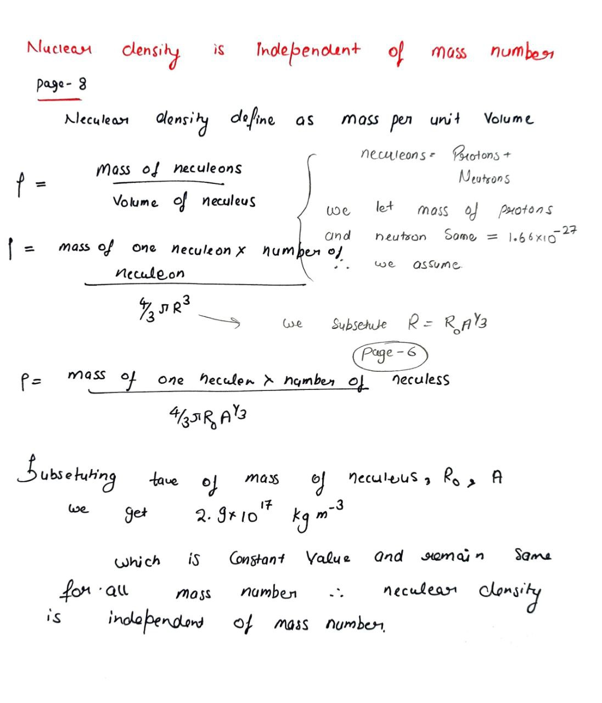
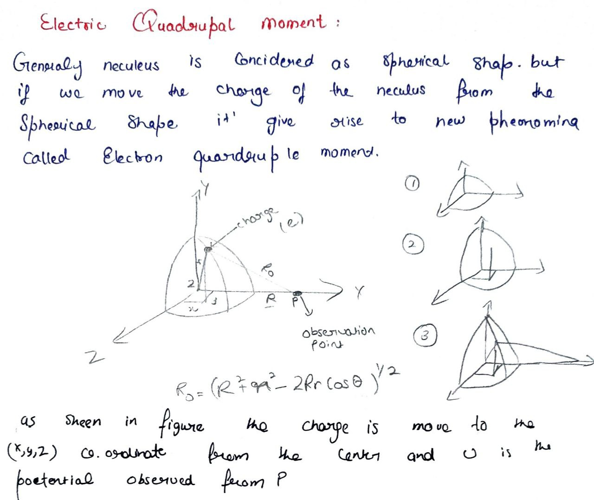
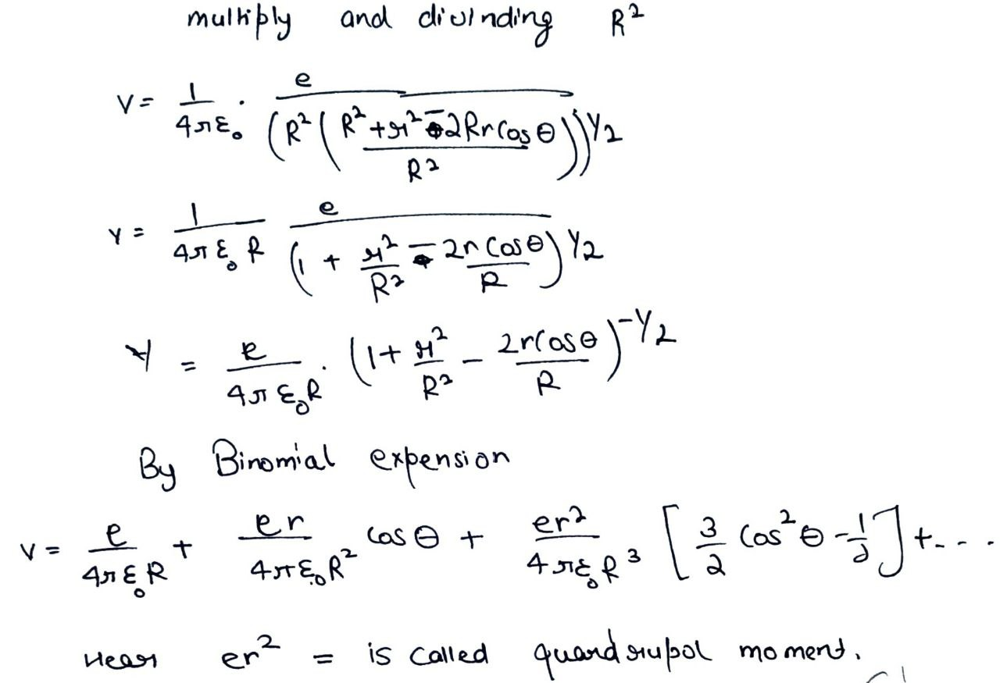
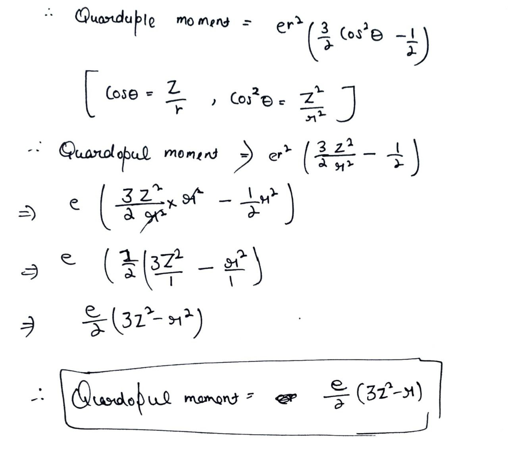
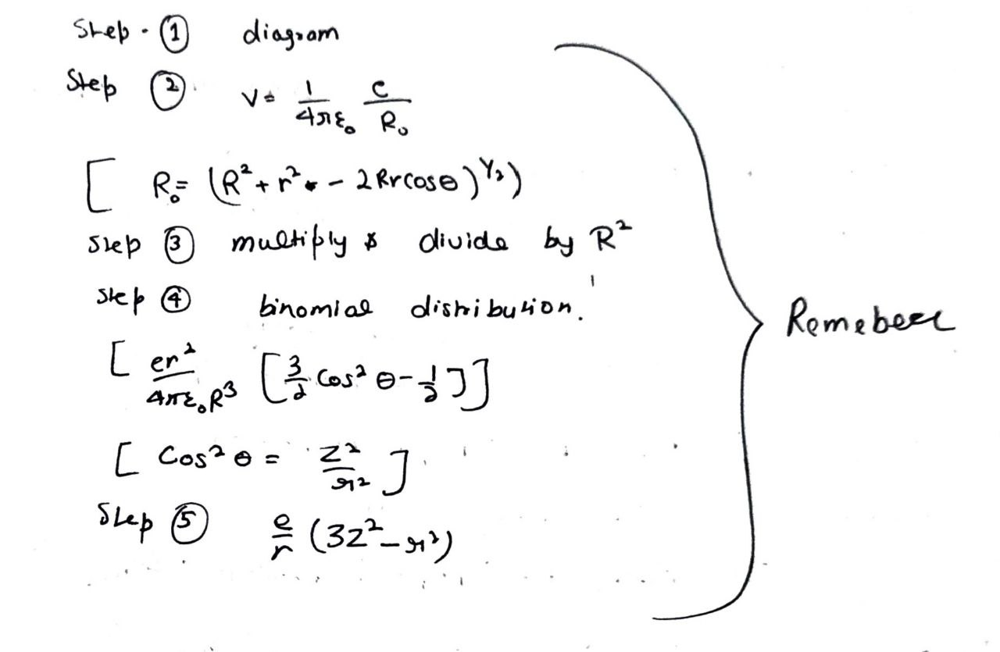
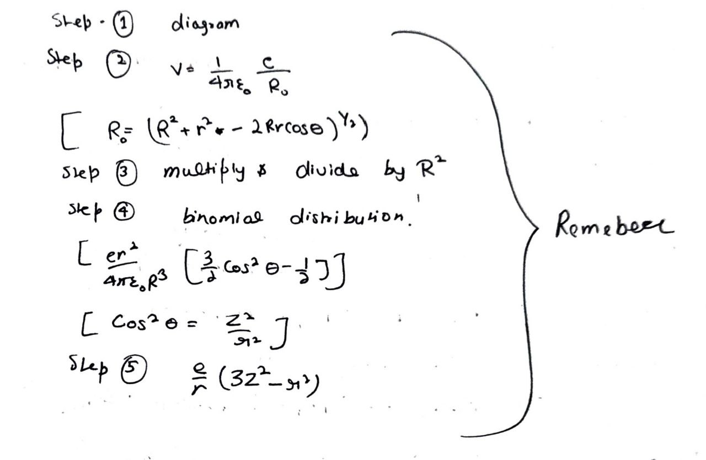

Electron-Proton theory :
The Electron-Proton Hypothesis of nuclear construction was an early model proposed to explain the structure of atomic nuclei before the discovery of the neutron. According to this hypothesis, the nucleus of an atom is composed of protons and electrons1. The idea was that the positive charge of the nucleus was due to protons, and the electrons were thought to be present within the nucleus to account for the neutralization of the positive charge
Failures of the Hypothesis
The Electron-Proton Hypothesis of nuclear construction was an early model proposed to explain the structure of atomic nuclei before the discovery of the neutron. According to this hypothesis, the nucleus of an atom is composed of protons and electrons1. The idea was that the positive charge of the nucleus was due to protons, and the electrons were thought to be present within the nucleus to account for the neutralization of the positive charge
Failures of the Hypothesis
- 1 ) Finite Size of Electrons : Electrons are spherical and have finite dimensions, making it difficult to fit a large number of them into a small nucleus, especially in heavy elements.
- 2 ) Spin Considerations : Both protons and electrons have a spin of 1 / 2 . According to the hypothesis, the nucleus should have half-integral spin if the number of protons and electrons is even, and integral spin if odd1. However, experimental observations showed that the spin of the nucleus depends on the mass number 𝐴 , with integral spin for even 𝐴 and half-integral spin for odd 𝐴
- 3 ) Magnetic Moment : The hypothesis could not explain the nuclear magnetic moment.
- 4 ) Discovery of the Neutron : The most significant failure was the discovery of the neutron by James Chadwick in 1932. The neutron explained the missing mass and charge balance in the nucleus, leading to the proton-neutron model, which replaced the electron-proton hypothesis.
Nuclear Size:
The nuclear size refers to the physical dimensions of an atomic nucleus, typically calculated using the formula:
R = R₀ A1/3,
where R₀ is approximately 1.2 femtometers (fm), and A is the mass number. Nuclear radii are in the range of 10⁻¹⁵ m.
Nuclear Volume:
The nuclear volume is the space occupied by the nucleus, estimated using the formula for the volume of a sphere:
V = (4/3)πR³. Since R is proportional to A1/3, the nuclear volume is directly proportional to A.
Nuclear Density:
Nuclear density is the mass per unit volume of the nucleus, given by: Density = Mass/Volume. The nuclear density is nearly constant for all nuclei, approximately 2.3 × 10¹⁷ kg/m³, due to the strong nuclear force.
Wave Mechanics:
Wave mechanics is a branch of quantum mechanics describing the behavior of particles using wave properties. It is based on wave-particle duality and uses the Schrödinger equation: Ĥψ = Eψ, where:
The nuclear size refers to the physical dimensions of an atomic nucleus, typically calculated using the formula:
R = R₀ A1/3,
where R₀ is approximately 1.2 femtometers (fm), and A is the mass number. Nuclear radii are in the range of 10⁻¹⁵ m.
Nuclear Volume:
The nuclear volume is the space occupied by the nucleus, estimated using the formula for the volume of a sphere:
V = (4/3)πR³. Since R is proportional to A1/3, the nuclear volume is directly proportional to A.
Nuclear Density:
Nuclear density is the mass per unit volume of the nucleus, given by: Density = Mass/Volume. The nuclear density is nearly constant for all nuclei, approximately 2.3 × 10¹⁷ kg/m³, due to the strong nuclear force.
Wave Mechanics:
Wave mechanics is a branch of quantum mechanics describing the behavior of particles using wave properties. It is based on wave-particle duality and uses the Schrödinger equation: Ĥψ = Eψ, where:
- Ĥ: Hamiltonian operator (total energy)
- ψ: Wavefunction
- E: Energy eigenvalue






Placeholder content for this accordion, which is intended to demonstrate the
.accordion-flush class. This is the third item's accordion body. Nothing more exciting happening here in terms of content, but just filling up the space to make it look, at least at first glance, a bit more representative of how this would look in a real-world application.
Placeholder content for this accordion, which is intended to demonstrate the
.accordion-flush class. This is the third item's accordion body. Nothing more exciting happening here in terms of content, but just filling up the space to make it look, at least at first glance, a bit more representative of how this would look in a real-world application.Placeholder content for this accordion, which is intended to demonstrate the
.accordion-flush class. This is the second item's accordion body. Let's imagine this being filled with some actual content.